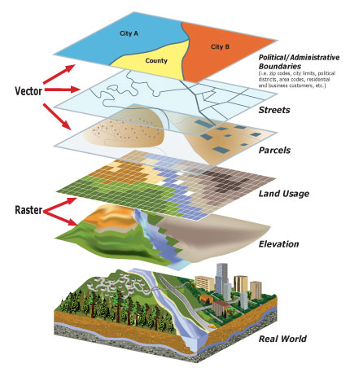

Geo Data Visualization
Data Vis Knowledge Exchange 2018
Niene Boeijen
I am
Web Cartographer
Full stack Web Map Developer
Interactive maps & geo-data visualizations

Geo?
Data with a location
Exact data, working with projections and GIS
Organising and restructuring a lot of data!
Knowing geo data models
Dependend on available data
Making maps like:
One specific map I made lately
Paradijs in de Polder
www.paradijsindepolder.nl
Idea
Soft map
No hard lines...
but Based on Geo Data

End Result

Lessons Learned
Line does not have to be a line, a polygon does not have to be a polygon
Do you ever need a map?
Any kind of geo data?
Come talk to me!
Thank you!
www.nieneb.nlniene@webmapper.net